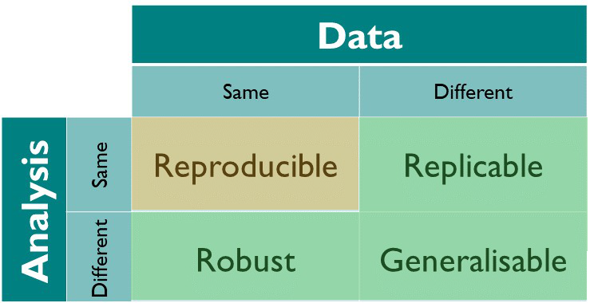
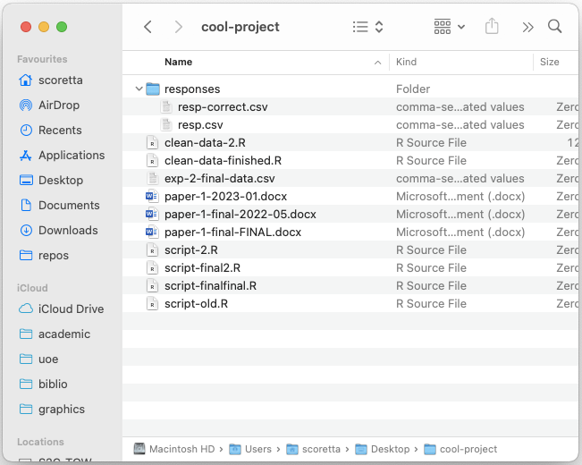
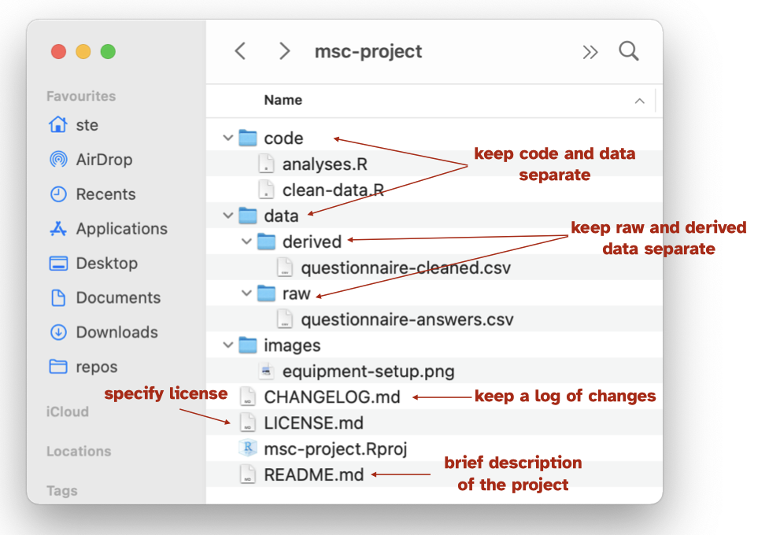
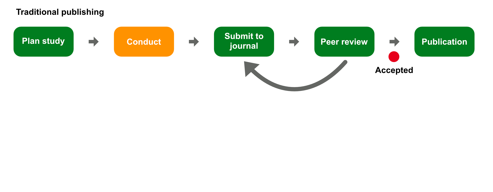
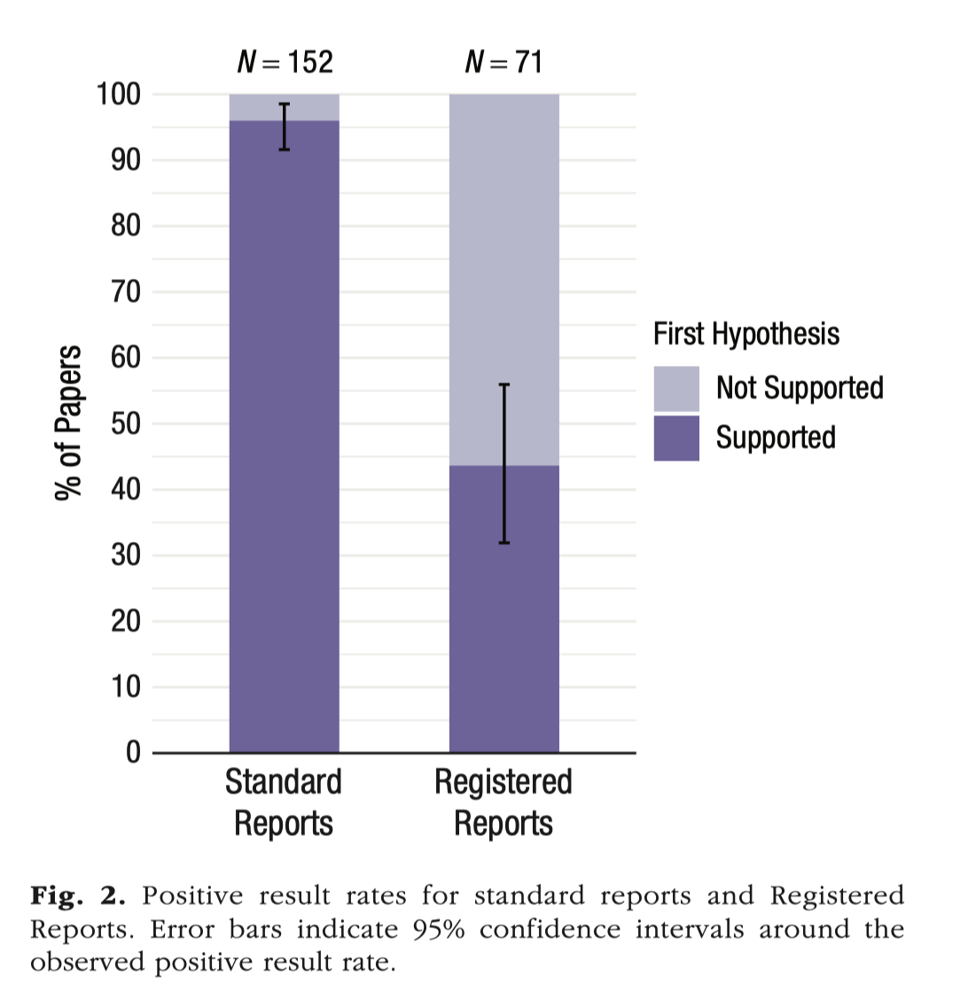

Open Research practices for linguistics
University of Edinburgh
2026-04-30
Research
Photo by UX Indonesia on Unsplash
Photo by Alex Shute on Unsplash

Research reliability

From The Turing Way.
Research reliability

From The Turing Way.
SOUND
Photo by Dušan veverkolog on Unsplash
Open Research
What is it?
Open Research is a movement that stresses the importance of a more honest and transparent research by promoting a series of research principles and by warning about common, although not necessarily intentional, questionable practices and misconceptions. Munafò et al. (2017); Crüwell et al. (2019); Casillas et al. (2025)
How to make your research open?
Share Research compendia.
Write Registered Reports.
Reflect on your researcher’s orientation.
Research compendium
A research compendium accompanies, enhances, or is a scientific publication providing data, code, and documentation for reproducing a scientific workflow.
A research compendium is a collection of all digital parts of a research project including data, code, texts (protocols, reports, questionnaires, meta data). The collection is created in such a way that reproducing all results is straightforward.
Research compendium
Research Compendium
A research compendium is a repository containing all materials, code, notebooks, images, data, metadata, manuscripts, etc of a project. A compendium is structured in a way that makes the research process transparent and reproducible.
- Ideally, use a single main folder.
- Organise files and folders inside according to type and context: separate data, code, images.
- Separate raw and derived data.
- Use as much automation as possible.
- Document everything (for example with
READMEs).
Research compendium: bad example

Research compendium: good example

Sharing research compendia
Licensing
Pick a license
Creative Commons is a commonly chosen license: https://creativecommons.org/chooser/
Other licenses (for software): MIT License, GNU license.
Always include a
LICENSEfile in your compendium and be explicit which parts of the compendium fall under which license.
Registered Reports

Registered Reports

Registered Reports: positive results

From Scheel et al. (2021).
Registered Reports: not killing the vibe

From Soderberg et al. (2021).
Registered Reports: resources
Chambers and Tzavella (2021): tips on writing RRs.
Karhulahti (2022); Karhulahti et al. (2023) for qualitative research.
PCI RR https://rr.peercommunityin.org: examples of Stage 1 and Stage 2 manuscripts.
Registered Reports in Linguistics: https://journals.ed.ac.uk/rrling/index.
Research is not done in a vacuum. Knowledge is contextual.
Photo by Dimmis Vart on Unsplash
Researcher’s orientation
Reflexive understanding of one’s own individual aspects and how they shape one’s own approach to and practice of research.
Not limited to: identity, lived experiences, social positionality, philosophical stance, personal beliefs, methodological theory, and more.
Researcher’s orientation: resources
Summary
Open Research
Transparency and reliability of results (reproducible, replicable, robust, generalisable).
Curate and share research compendia (with license).
Publish Registered Reports.
Think about your researcher’s orientation.